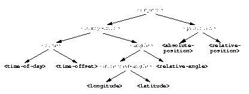
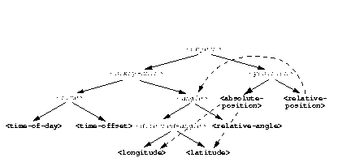

7.6 Meeting of angles and times
We can create a new superclass to combine times and angles. Sometimes, the trickiest part of defining superclasses that model characteristics shared by other classes is thinking of the right name for the superclass. Here, we use <sixty-unit> to name the class that has total-seconds that can be converted to either hours, minutes, and seconds, or to degrees, minutes, and seconds. In the methods for decoding and encoding total seconds, we use the name max-unit to refer to the unit that is hours for time, and degrees for positions.
define abstract class <sixty-unit> (<object>)
slot total-seconds :: <integer>, init-keyword: total-seconds:;
end class <sixty-unit>;
define method decode-total-seconds
(sixty-unit :: <sixty-unit>)
=> (max-unit :: <integer>, minutes :: <integer>, seconds :: <integer>)
decode-total-seconds(abs(sixty-unit.total-seconds));
end method decode-total-seconds;
define method encode-total-seconds
(max-unit :: <integer>, minutes :: <integer>, seconds :: <integer>)
=> (total-seconds :: <integer>)
((max-unit * 60) + minutes) * 60 + seconds;
end method encode-total-seconds;
We redefine the time and angle classes and methods to take advantage of the new <sixty-unit> class:
define abstract class <time> (<sixty-unit>)
end class <time>;
define abstract class <angle> (<sixty-unit>)
end class <angle>;
define method say (angle :: <angle>) => ()
let(degrees, minutes, seconds) = decode-total-seconds(angle);
format-out("%d degrees %d minutes %d seconds",
degrees, minutes, seconds);
end method say;
// definition unchanged, repeated for completeness
define abstract class <directed-angle> (<angle>)
slot direction :: <string>, init-keyword: direction:;
end class <directed-angle>;
define method say (angle :: <directed-angle>) => ()
next-method();
format-out(" %s", angle.direction);
end method say;
// definition unchanged, repeated for completeness
define class <relative-angle> (<angle>)
end class <relative-angle>;
// we need to show degrees for <relative-angle>, but do not need to show
// minutes and seconds,so we override the method on <angle>
define method say (angle :: <relative-angle>) => ()
format-out(" %d degrees", decode-total-seconds(angle));
end method say;
define method say (position :: <relative-position>) => ()
format-out("%d miles away at heading ", position.distance);
say(position.angle);
end method say;
To see the complete library, and the test code that creates position instances and calls say on them, see Chapter 8, A Simple Library.
Figure 7.2 shows the inheritance relationships of the classes. When one class inherits from another, the relationship is sometimes called the is-a relationship. For example, a direct instance of <time-offset> is a <time> as well, and it is a <sixty-unit>.
 |
The classes have another kind of relationship as well -- one class can use another class as the type of a slot, in what is called the has-a relationship. Figure 7.3 shows both the inheritance relationships, and the relationships of one class using another class as the type of a slot.
 |